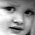

JOURNEY ON BEHALF OF THE ECLIPSE
domenica 8 agosto 1999
Waidhaus h 18:57
From Waidhaus de paura, Davide:
"La Francia è bella quindi la Germania avrà delle zone simili".
"Il satellificio" (Josto)
"Hei Luca, come si chiama quel pianeta?"
JOURNEY ON BEHALF OF THE ECLIPSE
lunedì 9 agosto 1999
Linz (A), h 02:30
Dopo un breve giro x Linz ci troviamo in camera. Jo in una singola, io Luca e Davide insieme in una tripla.
La città è deserta. Una città fantasma, magari sede di esperimenti nucleari o cose simili.
Davvero un'impressione unica. Negozi, locali, insegne luminose... tutto spento, strade pulite, spazi ampi, nessuno in giro.
A Linz passa il Danubio: fantastico!
A Praga non siamo arrivati. Alla dogana tra Germania e Repubblica Ceca non ci hanno fatto passare: io e Josto senza passaporto.
Lo immaginavamo... certo è che abituati a frontiere aperte e abbandonate siamo rimasti colpiti dall'essere rifiutati: è incredibile! Non poter "entrare" in un territorio... barriere invisibili e insensate.
Da lì siamo ripartiti per Linz facendo tappa nel primo paese raggiungibile: Waidhaus.
Un paesino dalle case colorate davvero in culo al mondo, al confine ceco.
Tra la chiesa e il municipo si svolgeva una sagra paesana: tavoli, birra, würstel e pesci.
Davvero uno spettacolo in perfetto stile teutonico! tutti gonfi di birra, paonazzi e giocondi. Donnoni e omoni già sbronzi alle cinque del pomeriggio dopo litri e litri di birra. Ci siamo uniti a loro.
Siamo stati squadrati e analizzati da cima a fondo... credo che in quel posto non siano abituati a forestieri.
L'atmosfera era quella tipica di paese, un po' alla Twin Peaks. Un paese di confine (e che confine!) però.
Un litro di birra a testa, qualche scatto di Davide, parecchie risate di gusto (al malto?). La fauna era davvero curiosa... tedeschi!
(Ricordo la frase di Josto su tedeschi e francesi più volte citata oggi...)
Tedeschi di confine: rozzi, gonfi e di cattivo gusto. Donnone pelose e uomini da strane pettinature...
Siamo ripartiti un po' brilli e divertiti da questo viaggio così generoso di istintività e positività. Speriamo che Linz non ci fermi ;-)
da questo viaggio così generoso di istintività e positività. Speriamo che Linz non ci fermi ;-)
TOP